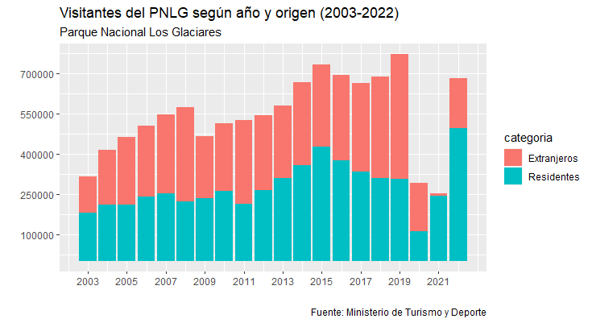
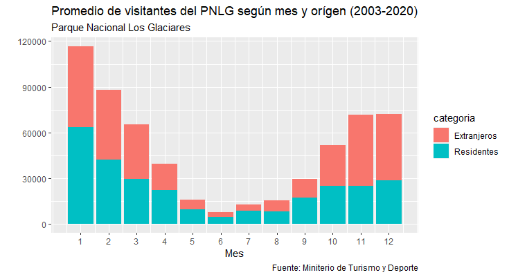
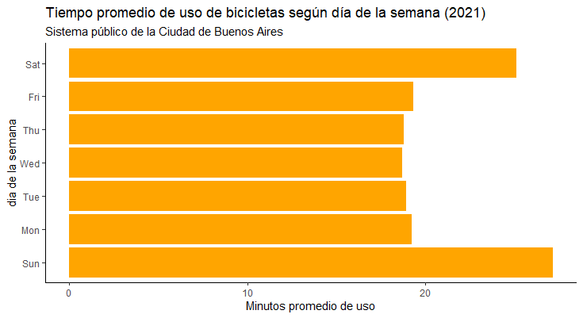
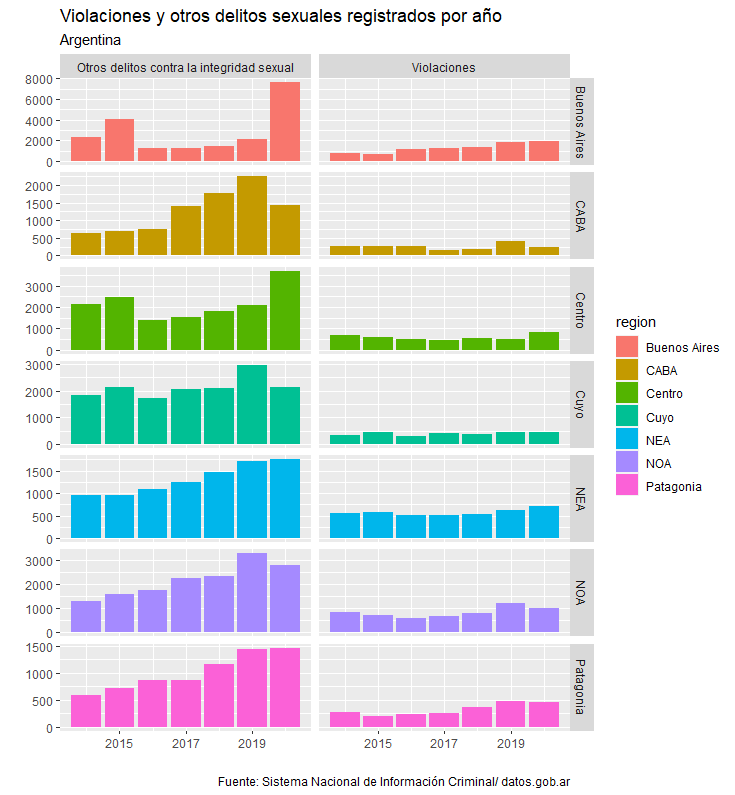
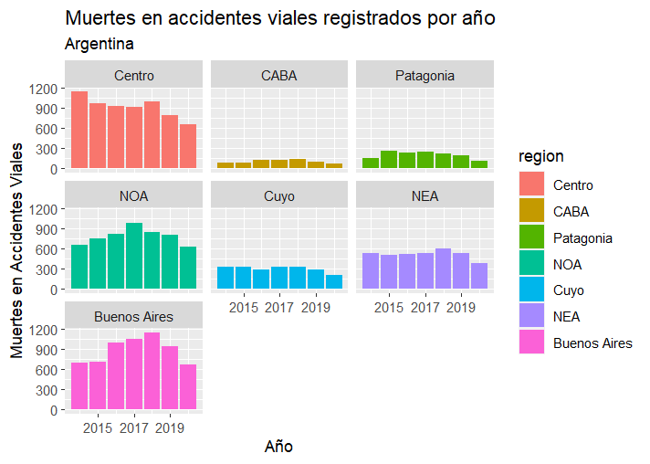

Mis investigaciones
Decidi utilizar este sitio para permitir la visualización de algunas de mis investigaciones, en las cuales he utilizado diversos programas estadísticos.
Todas las bases de datos son publicas y fueron publicadas por distintos organismos del estado argentino
Visitas al Parque Nacional Los Glaciares
Como he comentado, la ciudad en la que naci es visitada anualmente por turistas de todo el mundo. Es por ello que he realizado una búsqueda sobre las visitas al Parque Nacional, de modo de crear un gráfico que permita expresar tanto el crecimiento del turismo en la región como el elevado porcentaje de extranjeros de los visitantes. El resultado fue el siguiente:

Pero a pesar del gran crecimiento en la llegada de turistas, la actividad aún conserva un problema: la fuerte estacionalidad de su temporada turistica. Como se puede apreciar en el siguiente gráfico las visitas se concentran en los meses de verano (noviembre, diciembre, enero y febrero) mientras que durante los meses de invierno la llegada de turistas es muy limitada

Este es un problema historico de la ciudad, para el cual se están pensando aún posibles soluciones.
Uso de bicicletas públicas en Buenos Aires (2021)
En un curso sobre análisis de big data en R el ejercicio final era un ejercicio sobre el uso de bicicletas publicas en la Ciudad de Buenos Aires.
La dificultad es que el archivo csv contenia más de un millón de líneas! Una linea por cada uso.
La idea era descubrir qué dia y a qué hora las bicicletas públlicas habían sido más utilizadas. Los resultados son los que se pueden ver a continuación.


Como se puede aproeciar las bicicletas fueron más utilizadas los viernes y por la tarde, principalemente entre las 17 y las 18 hs.
Sin embargo, cuando se aprecia la duración del uso, se puede observar que los dias sábados y domingos se utilizan un tiempo más prolongado (25 y 27 minutos respectivamente), mientras que los dias de semana el tiempo promedio de uso no supera los 20 minutos.

Probablemente esto esté asociado a que los dias de semana la bicicleta se use como medio de transporte hacia/desde el trabajo, mientras que los fines de semana tiende a usarse con fines recreativos.
Delitos en Argentina
Buscando archivos csv con los cuales trabajar y probar los distintos programas aprendidos encontré un dataset sobre delitos en Argentina.
El archivo es realmente interesante porque permite ver la evolcuion de los delitos en las 24 provincias en los últimos años según el tipo de delito.
El resultado que más me impresionó fue el enorme crecimiento de los delitos de índole sexual en los últimos años. Para permitir una comparación visualmente útil, reagrupé las provinciasd en regiones.
Como se puede apreciar en el gráfico, las violaciones y otros delitos sexuales han subido en todas las regiones en los últimos años.

El mismo dataset tambien permitía ver otras "situaciones" (consideradas delitos en el dataset) como suicidios y muertes en accidentes viales.
Como se puede ver en los gráficos, la evolución depende de la región: mientras en algunos lugares estos fenómenos creccen, en otros se mantienen estables y en otros tienden a bajar. Como era de esperar, en el 2020 las muertes en accidentes viales fueron menos que durante el año anterior en todas las regiones.


Trabajos con mapas: pobreza y mineria.
También en la Universidad de Buenos Aires, realicé un curso de QGIS, una herramienta muy interesante para la producción y análisis de información georreferenciada.
Para el trabajo final decidí realizar un mapa sobre la distribución espacial de la pobreza en la Ciudad de Buenos Aires, relacionandola con la distribución de Barrios Populares (antighuamenter llamados "Villas y asentamientos"), con el objetivo de ver si ambos fenomenos estaban espacialmente relacionados.
Como se puede apreciar en el mapa, la pobreza tiende a concentrarse en la zona sur este de la ciudad, en general en torno a los Barrios Populares.

El mapa que sigue es sobre minería en Argentina.
Permite ver la ubciación de los distintos proyectos mineros según el mineral extraído predominante.

Mercado de trabajo en Santa Cruz
Uno de mis primeros trabajos como investigador en Ciencias Sociales fue sobre el mercado de trabajo en la provincia deonde nací, Santa Cruz.
Estos gráficos exponen sólo una parte de ésta investigación sobre la economía provincial, ya que también abarca la producción, exportaciones, crecimiento demográfico, etc.
Los gráficos fueron realizados en Excel y permiten ver el crecimiento de los puestos de trabajo considerando en qué sector sucedieron.


Si quieres conocer más investigaciones mías te invito a visitar mi perfil de Tableau .